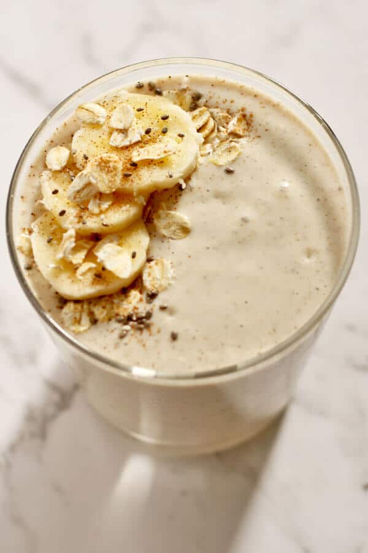

BANANA SMOTHIE

Description
A banana smoothie is a quick, nutritious, and delicious drink that can be enjoyed any time of the day. It typically combines ripe bananas with a liquid base, such as milk, yogurt, or a dairy-free alternative like almond or oat milk. The sweetness of the bananas creates a naturally creamy texture, making it the perfect foundation for a smooth, satisfying beverage. To make the smoothie even more flavorful, ingredients like honey, vanilla extract, or a pinch of cinnamon can be added, along with optional extras such as peanut butter, chia seeds, or protein powder for an added nutritional boost.
Banana smoothies are highly customizable, and they can be tailored to suit different tastes and dietary needs. For a thicker, more indulgent texture, adding ice cubes or frozen banana slices gives the smoothie an extra frosty, creamy consistency. The drink is naturally rich in potassium, vitamins, and fiber, making it a great choice for a healthy snack or a post-workout recovery drink. Whether enjoyed on its own or as part of a breakfast or snack, the banana smoothie is a versatile, easy-to-make treat that appeals to both kids and adults alike.
ingredients
- Ripe Bananas 1 or 2 bananas, peeled (depending on how thick or sweet you like your smoothie).
- Yogurt 1/2 cup (120 ml), plain or vanilla yogurt for creaminess (optional).
- Honey 1-2 teaspoons
- Ice Cubes A handful (optional), for a colder and thicker texture.
- Vanilla Extrakt 1/2 teaspoon (optional), for extra flavor.
- Cinnamon A pinch
Steps
- Prepare the Bananas: Peel 1 or 2 ripe bananas and break them into chunks. The number of bananas depends on how thick or sweet you prefer your smoothie.
- Add the Liquid: Pour 1 cup (240 ml) of your chosen milk (whole, skim, almond, oat, or coconut) into a blender. This serves as the base liquid for your smoothie.
- Add Yogurt (Optional): If you want a creamier texture, add 1/2 cup (120 ml) of plain or vanilla yogurt to the blender.
- Sweeten Your Smoothie (Optional): Add 1-2 teaspoons of honey or another sweetener to taste. Adjust based on your sweetness preference.
- Add Ice (Optional): For a thicker, colder smoothie, add a handful of ice cubes to the blender.
- Flavor Enhancements (Optional): Add 1/2 teaspoon of vanilla extract for extra flavor, and a pinch of cinnamon or nutmeg for a warm, spiced touch.
- Blend: Blend all the ingredients on high until smooth and creamy. If it's too thick, add a little more milk to reach your desired consistency.
- Serve: Pour your banana smoothie into a glass and enjoy immediately, preferably chilled!